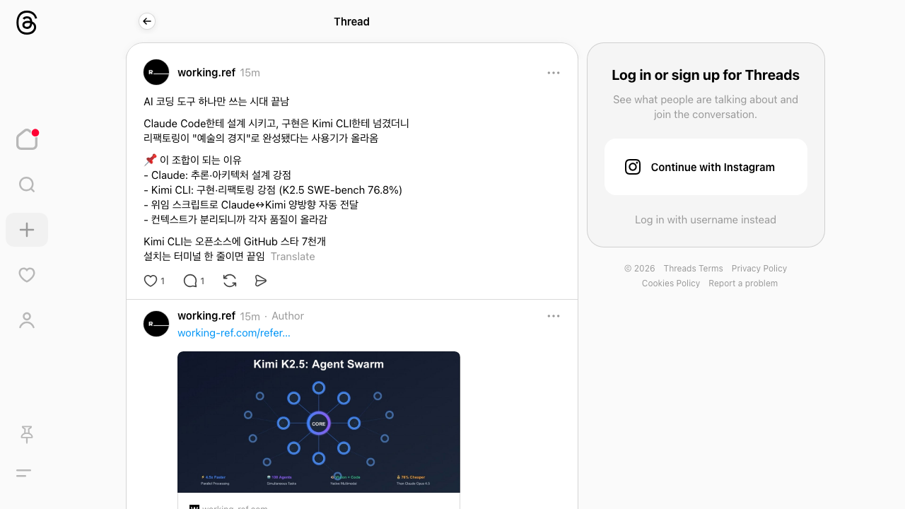
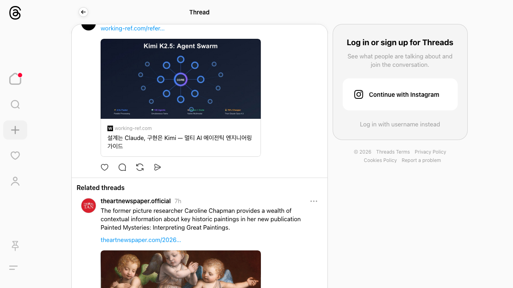

Claude Code + Kimi CLI 멀티 AI 에이전트 엔지니어링
Public GitHub Pages export · full wiki body rendered · raw files excluded
Claude Code + Kimi CLI 멀티 AI 에이전트 엔지니어링
Source candidate from News-Links/2026-03-06 Claude Code + Kimi CLI 멀티 AI 에이전트/README.md
Source Content
Claude Code + Kimi CLI 멀티 AI 에이전트 엔지니어링
🧵 원본: https://www.threads.com/@working.ref/post/DVhhTANkm8U
🗄️ 아카이브: https://web.archive.org/web/20260306011527/https://www.threads.com/@working.ref/post/DVhhTANkm8U
작성자: @working.ref
📋 요약
AI 코딩 도구 하나만 쓰는 시대가 끝났다는 주장. Claude Code(설계)와 Kimi CLI(구현)를 조합해 리팩토링을 "예술의 경지"로 끌어올렸다는 사용기.
💬 포스트 내용
AI 코딩 도구 하나만 쓰는 시대 끝남
Claude Code한테 설계 시키고, 구현은 Kimi CLI한테 넘겼더니 리팩토링이 "예술의 경지"로 완성됐다는 사용기가 올라옴
📌 이 조합이 되는 이유
- Claude: 추론·아키텍처 설계 강점
- Kimi CLI: 구현·리팩토링 강점 (K2.5 SWE-bench 76.8%)
- 위임 스크립트로 Claude↔Kimi 양방향 자동 전달
- 컨텍스트가 분리되니까 각자 품질이 올라감
Kimi CLI는 오픈소스에 GitHub 스타 7천개
설치는 터미널 한 줄이면 끝임
링크 첨부: 설계는 Claude, 구현은 Kimi — 멀티 AI 에이전트 엔지니어링 가이드 (working-ref.com)
🖼️ 스크린샷


💡 키포인트
- 역할 분리 원칙: Claude = 설계/추론, Kimi = 구현/리팩토링
- Kimi K2.5 성능: SWE-bench 76.8% (Claude Opus 4.5 대비 78% 저렴)
- Agent Swarm 아키텍처: 병렬 처리, 130개 에이전트, 네이티브 멀티모달
- 위임 스크립트: Claude↔Kimi 양방향 자동 전달로 컨텍스트 분리 → 품질↑
- Kimi CLI: 오픈소스, GitHub ⭐7천개, 터미널 한 줄 설치
🔗 관련 링크
- Kimi CLI GitHub: https://github.com/MoonshotAI/kimi-cli (추정)
- 원문 가이드: working-ref.com/refer...
Source Trace
News-Links/2026-03-06 Claude Code + Kimi CLI 멀티 AI 에이전트/README.md